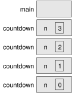
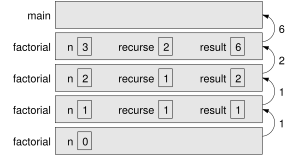
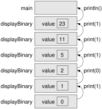

10 Recursive Methods
Up to this point, we’ve been using while and for loops whenever we’ve needed to repeat something. Methods that use iteration are called iterative. They are straight-forward, but sometimes more-elegant solutions exist.
In this chapter, we explore one of the most magical things that a method can do: invoke itself to solve a smaller version of the same problem. A method that invokes itself is called recursive.
10.1 Recursive Void Methods
Consider the following example:
public static void countdown(int n) {
if (n == 0) {
System.out.println("Blastoff!");
} else {
System.out.println(n);
countdown(n - 1);
}
}The name of the method is countdown; it takes a single integer as a parameter. If the parameter is 0, it displays the word Blastoff!. Otherwise, it displays the number and then invokes itself, passing n - 1 as the argument.
What happens if we invoke countdown(3) from main?
The execution of
countdownbegins withn == 3, and sincenis not 0, it displays the value 3, and then invokes itself...The execution of
countdownbegins withn == 2, and sincenis not 0, it displays the value 2, and then invokes itself...The execution of
countdownbegins withn == 1, and sincenis not 0, it displays the value 1, and then invokes itself...The execution of
countdownbegins withn == 0, and sincenis 0, it displays the wordBlastoff!and then returns.The
countdownthat gotn == 1returns.The
countdownthat gotn == 2returns.The
countdownthat gotn == 3returns.
And then you’re back in main. So the total output looks like this:
3
2
1
Blastoff!As a second example, we’ll rewrite the methods newLine and threeLine from Section 4.1. Here they are again:
public static void newLine() {
System.out.println();
}
public static void threeLine() {
newLine();
newLine();
newLine();
}Although these methods work, they would not help if we wanted to display two newlines, or maybe 100. A more general alternative would be the following:
public static void nLines(int n) {
if (n > 0) {
System.out.println();
nLines(n - 1);
}
}This method takes an integer, n, as a parameter and displays n newlines. The structure is similar to countdown. As long as \(n\) is greater than 0, it displays a newline and then invokes itself to display \((n-1)\) additional newlines. The total number of newlines is \(1 + (n - 1)\), which is just what we wanted: \(n\).
10.2 Recursive Stack Diagrams
In Section 4.5, we used a stack diagram to represent the state of a program during a method invocation. The same kind of diagram can make it easier to interpret a recursive method.
Remember that every time a method gets called, Java creates a new frame that contains the method’s parameters and variables. Figure 8.1 is a stack diagram for countdown, called with n == 3.

countdown program.
By convention, the frame for main is at the top, and the stack of other frames grows down. That way, we can draw stack diagrams on paper without needing to guess how far they will grow. The frame for main is empty because main does not have any variables. (It has the parameter args, but since we’re not using it, we left it out of the diagram.)
There are four frames for countdown, each with a different value for the parameter n. The last frame, with n == 0, is called the base case. It does not make a recursive call, so there are no more frames below it.
If there is no base case in a recursive method, or if the base case is never reached, the stack would grow forever—at least in theory. In practice, the size of the stack is limited. If you exceed the limit, you get a StackOverflowError.
For example, here is a recursive method without a base case:
public static void forever(String s) {
System.out.println(s);
forever(s);
}This method displays the given string until the stack overflows, at which point it throws an error. Try this example on your computer—you might be surprised by how long the error message is!
10.3 Value-Returning Methods
To give you an idea of what you can do with the tools you have learned, let’s look at methods that evaluate recursively defined mathematical functions.
A recursive definition is similar to a “circular” definition, in the sense that the definition refers to the thing being defined. Of course, a truly circular definition is not very useful:
recursive:
An adjective used to describe a method that is recursive.
If you saw that definition in the dictionary, you might be annoyed. Then again, if you search for “recursion” on Google, it displays “Did you mean: recursion” as an inside joke. People fall for that link all the time.
Many mathematical functions are defined recursively, because that is often the simplest way. For example, the factorial of an integer \(n\), which is written \(n!\), is defined like this: \[\begin{aligned}
&& 0! = 1 \\
&& n! = n \cdot(n-1)!
\end{aligned}\] Don’t confuse the mathematical symbol \(!\), which means factorial, with the Java operator !, which means not. This definition says that factorial(0) is 1, and factorial(n) is n * factorial(n - 1).
So factorial(3) is 3 * factorial(2); factorial(2) is 2 * factorial(1); factorial(1) is 1 * factorial(0); and factorial(0) is 1. Putting it all together, we get 3 * 2 * 1 * 1, which is 6.
If you can formulate a recursive definition of something, you can easily write a Java method to evaluate it. The first step is to decide what the parameters and return type are. Since factorial is defined for integers, the method takes an int as a parameter and returns an int:
public static int factorial(int n) {
return 0; // stub
}Next, we think about the base case. If the argument happens to be 0, we return 1:
public static int factorial(int n) {
if (n == 0) {
return 1;
}
return 0; // stub
}Otherwise, and this is the interesting part, we have to make a recursive call to find the factorial of \(n-1\), and then multiply it by \(n\):
public static int factorial(int n) {
if (n == 0) {
return 1;
}
int recurse = factorial(n - 1);
int result = n * recurse;
return result;
}To illustrate what is happening, we’ll use the temporary variables recurse and result. In each method call, recurse stores the factorial of \(n - 1\), and result stores the factorial of \(n\).
The flow of execution for this program is similar to countdown from Section 8.1. If we invoke factorial with the value 3:
Since 3 is not 0, we skip the first branch and calculate the factorial of \(n-1\)...
Since 2 is not 0, we skip the first branch and calculate the factorial of \(n-1\)...
Since 1 is not 0, we skip the first branch and calculate the factorial of \(n-1\)...
Since 0 is 0, we take the first branch and return the value 1 immediately.
The return value (1) gets multiplied by
n, which is 1, and the result is returned.The return value (1) gets multiplied by
n, which is 2, and the result is returned.The return value (2) gets multiplied by
n, which is 3, and the result, 6, is returned to whatever invokedfactorial(3).
Figure 8.2 shows what the stack diagram looks like for this sequence of method invocations. The return values are shown being passed up the stack. Notice that recurse and result do not exist in the last frame, because when n == 0, the code that declares them does not execute.

factorial method.
10.4 The Leap of Faith
Following the flow of execution is one way to read programs, but it can quickly become overwhelming. Another way to understand recursion is the leap of faith: when you come to a method invocation, instead of following the flow of execution, you assume that the method works correctly and returns the appropriate value.
In fact, you are already practicing this leap of faith when you use methods in the Java library. When you invoke Math.cos or System.out.println, you don’t think about the implementations of those methods. You just assume that they work properly.
The same is true of other methods. For example, consider the method from Section 5.8 that determines whether an integer has only one digit:
public static boolean isSingleDigit(int x) {
return x > -10 && x < 10;
}Once you convince yourself that this method is correct—by examining and testing the code—you can just use the method without ever looking at the implementation again.
Recursive methods are no different. When you get to a recursive call, don’t think about the flow of execution. Instead, assume that the recursive call produces the desired result.
For example, “Assuming that I can find the factorial of \(n-1\), can I compute the factorial of \(n\)?” Yes you can, by multiplying by \(n\). Here’s an implementation of factorial with the temporary variables removed:
public static int factorial(int n) {
if (n == 0) {
return 1;
}
return n * factorial(n - 1);
}Notice how similar this version is to the original mathematical definition: \[\begin{aligned} && 0! = 1 \\ && n! = n \cdot(n-1)! \end{aligned}\] Of course, it is strange to assume that the method works correctly when you have not finished writing it. But that’s why it’s called a leap of faith!
Another common recursively defined mathematical function is the Fibonacci sequence, which has the following definition: \[\begin{aligned} && fibonacci(1) = 1 \\ && fibonacci(2) = 1 \\ && fibonacci(n) = fibonacci(n-1) + fibonacci(n-2) \end{aligned}\] Notice that each Fibonacci number is the sum of the two preceding Fibonacci numbers. Translated into Java, this function is as follows:
public static int fibonacci(int n) {
if (n == 1 || n == 2) {
return 1;
}
return fibonacci(n - 1) + fibonacci(n - 2);
}If you try to follow the flow of execution here, even for small values of n, your head will explode. But if we take a leap of faith and assume that the two recursive invocations work correctly, then it is clear, looking at the definition, that our implementation is correct.
10.5 Counting Up Recursively
The countdown example in Section 8.1 has three parts: (1) it checks the base case, (2) it displays something, and (3) it makes a recursive call. What do you think happens if you reverse steps 2 and 3, making the recursive call before displaying?
public static void countup(int n) {
if (n == 0) {
System.out.println("Blastoff!");
} else {
countup(n - 1);
System.out.println(n);
}
}The stack diagram is the same as before, and the method is still called \(n\) times. But now the System.out.println happens just before each recursive call returns. As a result, it counts up instead of down:
Blastoff!
1
2
3Keep this in mind for the next example, which displays numbers in binary.
10.6 Binary Number System
You are probably aware that computers can store only 1s and 0s. That’s because processors and memory are made up of billions of tiny on-off switches.
The value 1 means a switch is on; the value 0 means a switch is off. All types of data, whether integer, floating-point, text, audio, video, or something else, are represented by 1s and 0s.
Fortunately, we can represent any integer as a binary number. Table 8.1 shows the first eight numbers in binary and decimal.
| Binary | Decimal |
|---|---|
| 0 | 0 |
| 1 | 1 |
| 10 | 2 |
| 11 | 3 |
| 100 | 4 |
| 101 | 5 |
| 110 | 6 |
| 111 | 7 |
In decimal there are 10 digits, and the written representation of numbers is based on powers of 10. For example, the number 456 has 4 in the 100’s place, 5 in the 10’s place, and 6 in the 1’s place. So the value is 400 + 50 + 6:
| 4 | 5 | 6 |
|---|---|---|
| \(10^2\) | \(10^1\) | \(10^0\) |
In binary there are two digits, and the written representation of numbers is based on powers of two. For example, the number 10111 has 1 in the 16’s place, 0 in the 8’s place, 1 in the 4’s place, 1 in the 2’s place, and 1 in the 1’s place. So the value is 16 + 0 + 4 + 2 + 1, which is 23 in decimal.
| 1 | 0 | 1 | 1 | 1 |
|---|---|---|---|---|
| \(2^4\) | \(2^3\) | \(2^2\) | \(2^1\) | \(2^0\) |
To get the digits of a decimal number, we can use repeated division. For example, if we divide 456 by 10, we get 45 with remainder 6. The remainder is the rightmost digit of 456.
If we divide the result again, we get 4 with remainder 5. The remainder is the second rightmost digit of 456. And if we divide again, we get 0 with remainder 4. The remainder is the third rightmost digit of 456, and the result, 0, tells us that we’re done.
We can do the same thing in binary if we divide by 2. When you divide by 2, the remainder is the right-most digit, either 0 or 1. If you divide the result again, you get the second rightmost digit. If you keep going, and write down the remainders, you’ll have your number in binary:
23 / 2 is 11 remainder 1
11 / 2 is 5 remainder 1
5 / 2 is 2 remainder 1
2 / 2 is 1 remainder 0
1 / 2 is 0 remainder 1Reading these remainders from bottom to top, 23 in binary is 10111.
10.7 Recursive Binary Method
Now, to display a number in binary, we can combine the algorithm from the previous section and the “count up” pattern from Section 8.5.
Here is a recursive method that displays any positive integer in binary:
public static void displayBinary(int value) {
if (value > 0) {
displayBinary(value / 2);
System.out.print(value % 2);
}
}If value is 0, displayBinary does nothing (that’s the base case). If the argument is positive, the method divides it by 2 and calls displayBinary recursively. When the recursive call returns, the method displays one digit of the result and returns (again). Figure 8.3 illustrates this process.

displayBinary method.
The leftmost digit is near the bottom of the stack, so it gets displayed first. The rightmost digit, near the top of the stack, gets displayed last. After invoking displayBinary, we use println to complete the output:
displayBinary(23); // output is 10111
System.out.println();10.8 CodingBat Problems
In the past several chapters, you’ve seen methods, conditions, loops, strings, arrays, and recursion. A great resource for practicing all of these concepts is https://codingbat.com/.
CodingBat is a free website of programming problems developed by Nick Parlante, a computer science lecturer at Stanford University. As you work on these problems, CodingBat saves your progress (if you create an account).
To conclude this chapter, we consider two problems in the Recursion-1 section of CodingBat. One of them deals with strings, and the other deals with arrays. Both of them have the same recursive idea: check the base case, look at the current index, and recursively handle the rest.
The first problem is available at https://codingbat.com/prob/p118230:
Recursion-1 noX
Given a string, compute recursively a new string where all the
'x'chars have been removed.noX("xaxb") \(\rightarrow\) "ab"
noX("abc") \(\rightarrow\) "abc"
noX("xx") \(\rightarrow\) ""
When solving recursive problems, it helps to think about the base case first. The base case is the easiest version of the problem; for noX, it’s the empty string. If the argument is an empty string, there are no x’s to be removed:
if (str.length() == 0) {
return "";
}Next comes the more difficult part. To solve a problem recursively, you need to think of a simpler instance of the same problem. For noX, it’s removing all the x’s from a shorter string.
So let’s split the string into two parts, the first letter and the rest:
char first = str.charAt(0);
String rest = str.substring(1);Now we can make a recursive call to remove the x’s from rest:
String recurse = noX(rest);If first happens to be an x, we’re done; we just have to return recurse. Otherwise, we have to concatenate first and recurse. Here’s the if statement we need:
if (first == 'x') {
return recurse;
} else {
return first + recurse;
}You can run this solution on CodingBat by pasting these snippets into the provided method definition.
The second problem is available at https://codingbat.com/prob/p135988:
Recursion-1 array11
Given an array of ints, compute recursively the number of times that the value 11 appears in the array.
array11([1, 2, 11], 0) \(\rightarrow\) 1
array11([11, 11], 0) \(\rightarrow\) 2
array11([1, 2, 3, 4], 0) \(\rightarrow\) 0
This problem uses the convention of passing the index as an argument. So the base case is when we’ve reached the end of the array. At that point, we know there are no more 11s:
if (index >= nums.length) {
return 0;
}Next we look at the current number (based on the given index), and check if it’s an 11. After that, we can recursively check the rest of the array. Similar to the noX problem, we look at only one integer per method call:
int recurse = array11(nums, index + 1);
if (nums[index] == 11) {
return recurse + 1;
} else {
return recurse;
}Again, you can run this solutions on CodingBat by pasting the snippets into the method definition.
To see how these solutions actually work, you might find it helpful to step through them with a debugger (see Appendix 18.6) or Java Tutor (https://thinkjava.org/javatutor). Then try solving other CodingBat problems on your own.
Learning to think recursively is an important part of learning to think like a computer scientist. Many algorithms can be written concisely with recursive methods that perform computations on the way down, on the way up, or both.
10.9 Vocabulary
- iterative:
-
A method or algorithm that repeats steps by using one or more loops.
- recursive:
-
A method or algorithm that invokes itself one or more times with different arguments.
- base case:
-
A condition that causes a recursive method not to make another recursive call.
- factorial:
-
The product of all the integers up to and including a given integer.
- leap of faith:
-
A way to read recursive programs by assuming that the recursive call works, rather than following the flow of execution.
- binary:
-
A system that uses only zeros and ones to represent numbers. Also known as “base 2”.
10.10 Exercises
The code for this chapter is in the ch08 directory of ThinkJavaCode2. See page for instructions on how to download the repository. Before you start the exercises, we recommend that you compile and run the examples.
If you have not already read Appendix 18.7, now might be a good time. It describes JUnit, a standard framework for writing test code.
Exercise 8.1. The purpose of this exercise is to take a problem and break it into smaller problems, and to solve the smaller problems by writing simple methods. Consider the first verse of the song “99 Bottles of Beer”:
99 bottles of beer on the wall,
99 bottles of beer,
ya’ take one down, ya’ pass it around,
98 bottles of beer on the wall.
Subsequent verses are identical except that the number of bottles gets smaller by one in each verse, until the last verse:
No bottles of beer on the wall,
no bottles of beer,
ya’ can’t take one down, ya’ can’t pass it around,
’cause there are no more bottles of beer on the wall!
And then the song (finally) ends.
Write a program that displays the entire lyrics of “99 Bottles of Beer”. Your program should include a recursive method that does the hard part, but you might want to write additional methods to separate other parts of the program. As you develop your code, test it with a small number of verses, like 3.
Exercise 8.2. Write a recursive method named oddSum that takes a positive odd integer n and returns the sum of odd integers from 1 to n. Start with a base case, and use temporary variables to debug your solution. You might find it helpful to print the value of n each time oddSum is invoked.
Exercise 8.3. In this exercise, you will use a stack diagram to understand the execution of the following recursive method:
public static void main(String[] args) {
System.out.println(prod(1, 4));
}
public static int prod(int m, int n) {
if (m == n) {
return n;
} else {
int recurse = prod(m, n - 1);
int result = n * recurse;
return result;
}
}Draw a stack diagram showing the state of the program just before the last invocation of
prodcompletes.What is the output of this program? (Try to answer this question on paper first; then run the code to check your answer.)
Explain in a few words what
proddoes (without getting into the details of how it works).Rewrite
prodwithout the temporary variablesrecurseandresult. Hint:* You need only one line for theelsebranch.*
Exercise 8.4. The goal of this exercise is to translate a recursive definition into a Java method. The Ackermann function is defined for non-negative integers as follows: \[\begin{aligned} A(m, n) = \begin{cases} n+1 & \mbox{if } m = 0 \\ A(m-1, 1) & \mbox{if } m > 0 \mbox{ and } n = 0 \\ A(m-1, A(m, n-1)) & \mbox{if } m > 0 \mbox{ and } n > 0 \end{cases} \end{aligned}\]
Write a recursive method called ack that takes two ints as parameters and that computes and returns the value of the Ackermann function.
Test your implementation of Ackermann by invoking it from main and displaying the return value. Note the return value gets very big very quickly. You should try it only for small values of \(m\) and \(n\) (not bigger than 3).
Exercise 8.5.
Write a recursive method called power that takes a double x and an integer n and returns \(x^n\).
**Hint:* A recursive definition of this operation is \(x^n = x \cdot x^{n-1}\). Also, remember that anything raised to the zeroth power is 1.*
Optional challenge: you can make this method more efficient, when n is even, using \(x^n = \left( x^{n/2} \right)^2\).
Exercise 8.6. Many of the patterns you have seen for traversing arrays can also be written recursively. It is not common, but it is a useful exercise.
Write a method called
maxInRangethat takes an array of integers and two indexes,lowIndexandhighIndex, and finds the maximum value in the array, but considering only the elements betweenlowIndexandhighIndex, including both.This method should be recursive. If the length of the range is 1 (i.e., if
lowIndex == highIndex), we know immediately that the sole element in the range must be the maximum. So that’s the base case.If there is more than one element in the range, we can break the array into two pieces, find the maximum in each piece, and then find the maximum of the maxima.
Methods like
maxInRangecan be awkward to use. To find the largest element in an array, we have to provide the range for the entire array:double max = maxInRange(a, 0, a.length - 1);Write a method called
maxthat takes an array and usesmaxInRangeto find and return the largest element.
Exercise 8.7. Create a program called Recurse.java* and type in the following methods:*
/**
* Returns the first character of the given String.
*/
public static char first(String s) {
return s.charAt(0);
}/**
* Returns all but the first letter of the given String.
*/
public static String rest(String s) {
return s.substring(1);
}/**
* Returns all but the first and last letter of the String.
*/
public static String middle(String s) {
return s.substring(1, s.length() - 1);
}/**
* Returns the length of the given String.
*/
public static int length(String s) {
return s.length();
}Write some code in
mainthat tests each of these methods. Make sure they work, and you understand what they do.Using these methods, and without using any other
Stringmethods, write a method calledprintStringthat takes a string as a parameter and displays the letters of the string, one on each line. It should be avoidmethod.Again using only these methods, write a method called
printBackwardthat does the same thing asprintStringbut displays the string backward (again, one character per line).Now write a method called
reverseStringthat takes a string as a parameter and returns a new string as a return value. The new string should contain the same letters as the parameter, but in reverse order:String backwards = reverseString("coffee"); System.out.println(backwards);The output of this example code should be as follows:
eeffocA palindrome is a word that reads the same both forward and backward, like “otto” and “palindromeemordnilap”. Here’s one way to test whether a string is a palindrome:
A single letter is a palindrome, a two-letter word is a palindrome if the letters are the same, and any other word is a palindrome if the first letter is the same as the last and the middle is a palindrome.
Write a recursive method named
isPalindromethat takes aStringand returns abooleanindicating whether the word is a palindrome.